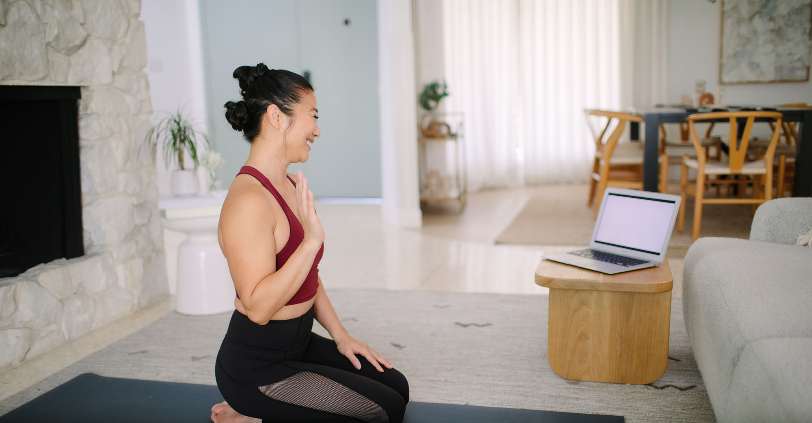

On-Demand Yoga
We understand that life doesn’t always allow for fixed schedules, which is why we created our on-demand yoga library. These pre-recorded sessions allow you to practice at your convenience—early morning, late evening, or even during a lunch break. The library includes short beginner tutorials, full-length flows, and guided meditations. Every video is filmed with clear instructions, so you feel as though the teacher is right there with you. You can pause, rewind, or repeat your favorite sessions as many times as you need. This flexibility ensures steady progress even on the busiest days. New videos are added regularly, so you’ll always find fresh inspiration. Whether you want a calming stretch before bed or an energizing flow to start the day, our on-demand classes bring the studio experience into your home. Yoga is now truly available anytime, anywhere, and completely at your pace.
